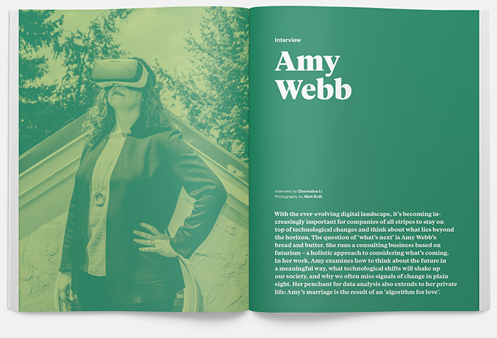
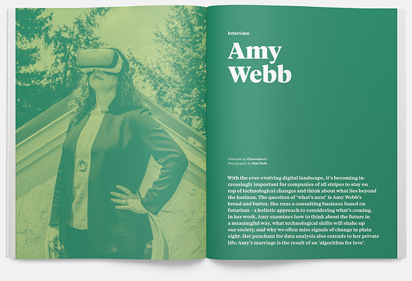
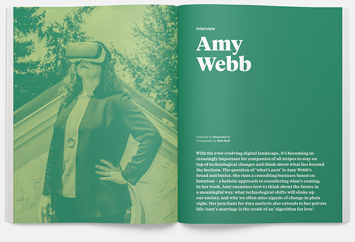

Offscreen is an independent magazine about people who use the internet and technology to be creative, solve problems, and build successful businesses. Captured in enduring print, it documents stories of creativity and passion that shape the digital age.
Futurist Amy Webb explains how to think meaningfully about the future; Web Standards grandmaster Eric A. Meyer lays out an approach for building a more compassionate web experience; British entrepreneur Pip Jamieson shares the challenges of launching a ‘LinkedIn for Creatives’ – twice; and freelance coach Paul Jarvis makes a case for designing work around life, not vice versa.
